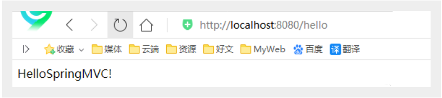
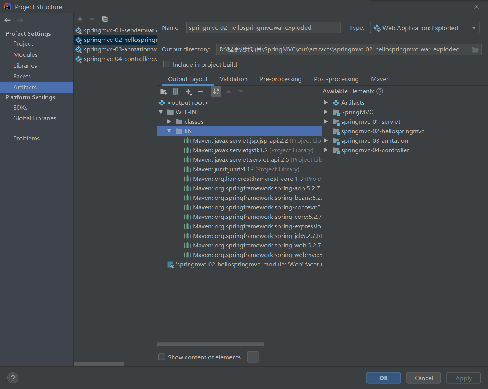
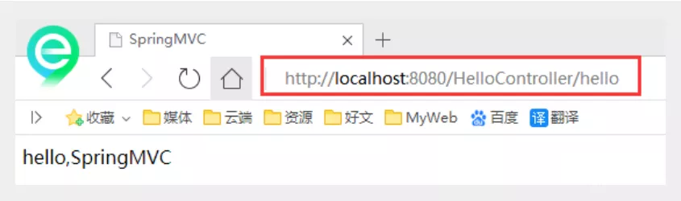
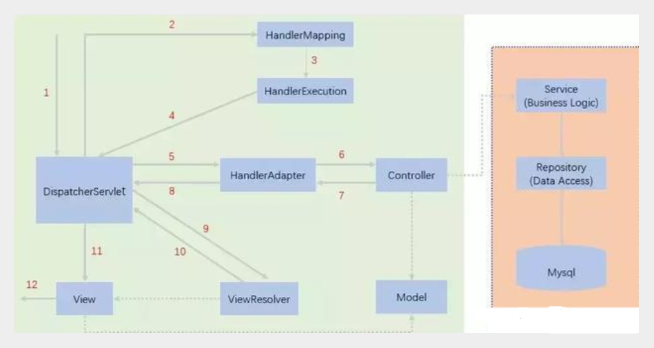

Hello SpringMVC
配置版
新建一个Moudle ， springmvc-02-hello ， 添加web的支持！
确定导入了SpringMVC 的依赖！
配置web.xml ， 注册DispatcherServlet
<?xml version="1.0" encoding="UTF-8"?> <web-app xmlns="http://xmlns.jcp.org/xml/ns/javaee" xmlns:xsi="http://www.w3.org/2001/XMLSchema-instance" xsi:schemaLocation="http://xmlns.jcp.org/xml/ns/javaee http://xmlns.jcp.org/xml/ns/javaee/web-app_4_0.xsd" version="4.0"> <!--1.注册DispatcherServlet--> <servlet> <servlet-name>springmvc</servlet-name> <servlet-class>org.springframework.web.servlet.DispatcherServlet</servlet-class> <!--关联一个springmvc的配置文件:【servlet-name】-servlet.xml--> <init-param> <param-name>contextConfigLocation</param-name> <param-value>classpath:springmvc-servlet.xml</param-value> </init-param> <!--启动级别-1--> <load-on-startup>1</load-on-startup> </servlet> <!--/ 匹配所有的请求；（不包括.jsp）--> <!--/* 匹配所有的请求；（包括.jsp）--> <servlet-mapping> <servlet-name>springmvc</servlet-name> <url-pattern>/</url-pattern> </servlet-mapping> </web-app>编写SpringMVC 的 配置文件！名称：springmvc-servlet.xml : [servletname]-servlet.xml
说明，这里的名称要求是按照官方来的
<?xml version="1.0" encoding="UTF-8"?> <beans xmlns="http://www.springframework.org/schema/beans" xmlns:xsi="http://www.w3.org/2001/XMLSchema-instance" xsi:schemaLocation="http://www.springframework.org/schema/beans http://www.springframework.org/schema/beans/spring-beans.xsd"> </beans>添加 处理映射器
<bean class="org.springframework.web.servlet.handler.BeanNameUrlHandlerMapping"/>添加 处理器适配器
<bean class="org.springframework.web.servlet.mvc.SimpleControllerHandlerAdapter"/>添加 视图解析器
<!--视图解析器:DispatcherServlet给他的ModelAndView--> <bean class="org.springframework.web.servlet.view.InternalResourceViewResolver" id="InternalResourceViewResolver"> <!--前缀--> <property name="prefix" value="/WEB-INF/jsp/"/> <!--后缀--> <property name="suffix" value=".jsp"/> </bean>编写我们要操作业务Controller ，要么实现Controller接口，要么增加注解；需要返回一个ModelAndView，装数据，封视图；
import org.springframework.web.servlet.ModelAndView; import org.springframework.web.servlet.mvc.Controller; import javax.servlet.http.HttpServletRequest; import javax.servlet.http.HttpServletResponse; //注意：这里我们先导入Controller接口 public class HelloController implements Controller { public ModelAndView handleRequest(HttpServletRequest request, HttpServletResponse response) throws Exception { //ModelAndView 模型和视图 ModelAndView mv = new ModelAndView(); //封装对象，放在ModelAndView中。Model mv.addObject("msg","HelloSpringMVC!"); //封装要跳转的视图，放在ModelAndView中 mv.setViewName("hello"); //: /WEB-INF/jsp/hello.jsp return mv; } }将自己的类交给SpringIOC容器，注册bean
<!--Handler--> <bean id="/hello" class="com.lg.controller.HelloController"/>写要跳转的jsp页面，显示ModelandView存放的数据，以及我们的正常页面；
<%@ page contentType="text/html;charset=UTF-8" language="java" %> <html> <head> <title>lg</title> </head> <body> ${msg} </body> </html>配置Tomcat 启动测试！

可能遇到的问题：访问出现404，排查步骤：
查看控制台输出，看一下是不是缺少了什么jar包。
如果jar包存在，显示无法输出，就在IDEA的项目发布中，添加lib依赖！
重启Tomcat 即可解决！
如图：

注解版（主要）
新建一个Moudle，springmvc-03-hello-annotation 。添加web支持！
由于Maven可能存在资源过滤的问题，我们将配置完善
<build> <resources> <resource> <directory>src/main/java</directory> <includes> <include>**/*.properties</include> <include>**/*.xml</include> </includes> <filtering>false</filtering> </resource> <resource> <directory>src/main/resources</directory> <includes> <include>**/*.properties</include> <include>**/*.xml</include> </includes> <filtering>false</filtering> </resource> </resources> </build>在pom.xml文件引入相关的依赖：主要有Spring框架核心库、Spring MVC、servlet , JSTL等。我们在父依赖中已经引入了！
配置web.xml
注意点：
<?xml version="1.0" encoding="UTF-8"?> <web-app xmlns="http://xmlns.jcp.org/xml/ns/javaee" xmlns:xsi="http://www.w3.org/2001/XMLSchema-instance" xsi:schemaLocation="http://xmlns.jcp.org/xml/ns/javaee http://xmlns.jcp.org/xml/ns/javaee/web-app_4_0.xsd" version="4.0"> <!--1.注册servlet--> <servlet> <servlet-name>SpringMVC</servlet-name> <servlet-class>org.springframework.web.servlet.DispatcherServlet</servlet-class> <!--通过初始化参数指定SpringMVC配置文件的位置，进行关联--> <init-param> <param-name>contextConfigLocation</param-name> <param-value>classpath:springmvc-servlet.xml</param-value> </init-param> <!-- 启动顺序，数字越小，启动越早 --> <load-on-startup>1</load-on-startup> </servlet> <!--所有请求都会被springmvc拦截 --> <servlet-mapping> <servlet-name>SpringMVC</servlet-name> <url-pattern>/</url-pattern> </servlet-mapping> </web-app>/ 和 /* 的区别：< url-pattern > / </ url-pattern > 不会匹配到.jsp， 只针对我们编写的请求；即：.jsp 不会进入spring的 DispatcherServlet类 。< url-pattern > / </ url-pattern > 会匹配 .jsp，会出现返回 jsp视图 时再次进入spring的DispatcherServlet 类，导致找不到对应的controller所以报404错。
- 注意web.xml版本问题，要最新版！
- 注册DispatcherServlet
- 关联SpringMVC的配置文件
- 启动级别为1
- 映射路径为 / 【不要用/*，会404】
添加Spring MVC配置文件
在resource目录下添加springmvc-servlet.xml配置文件，配置的形式与Spring容器配置基本类似，为了支持基于注解的IOC，设置了自动扫描包的功能，具体配置信息如下：
<?xml version="1.0" encoding="UTF-8"?> <beans xmlns="http://www.springframework.org/schema/beans" xmlns:xsi="http://www.w3.org/2001/XMLSchema-instance" xmlns:context="http://www.springframework.org/schema/context" xmlns:mvc="http://www.springframework.org/schema/mvc" xsi:schemaLocation="http://www.springframework.org/schema/beans http://www.springframework.org/schema/beans/spring-beans.xsd http://www.springframework.org/schema/context https://www.springframework.org/schema/context/spring-context.xsd http://www.springframework.org/schema/mvc https://www.springframework.org/schema/mvc/spring-mvc.xsd"> <!-- 自动扫描包，让指定包下的注解生效,由IOC容器统一管理 --> <context:component-scan base-package="com.lg.controller"/> <!-- 让Spring MVC不处理静态资源 --> <mvc:default-servlet-handler /> <!-- 支持mvc注解驱动 在spring中一般采用@RequestMapping注解来完成映射关系 要想使@RequestMapping注解生效 必须向上下文中注册DefaultAnnotationHandlerMapping 和一个AnnotationMethodHandlerAdapter实例 这两个实例分别在类级别和方法级别处理。 而annotation-driven配置帮助我们自动完成上述两个实例的注入。 --> <mvc:annotation-driven /> <!-- 视图解析器 --> <bean class="org.springframework.web.servlet.view.InternalResourceViewResolver" id="internalResourceViewResolver"> <!-- 前缀 --> <property name="prefix" value="/WEB-INF/jsp/" /> <!-- 后缀 --> <property name="suffix" value=".jsp" /> </bean> </beans>在视图解析器中我们把所有的视图都存放在/WEB-INF/目录下，这样可以保证视图安全，因为这个目录下的文件，客户端不能直接访问。
- 让IOC的注解生效
- 静态资源过滤 ：HTML . JS . CSS . 图片 ， 视频 …..
- MVC的注解驱动
- 配置视图解析器
创建Controller
编写一个Java控制类：com.lg.controller.HelloController , 注意编码规范
package com.lg.controller; import org.springframework.stereotype.Controller; import org.springframework.ui.Model; import org.springframework.web.bind.annotation.RequestMapping; @Controller @RequestMapping("/HelloController") public class HelloController { //真实访问地址 : 项目名/HelloController/hello @RequestMapping("/hello") public String sayHello(Model model){ //向模型中添加属性msg与值，可以在JSP页面中取出并渲染 model.addAttribute("msg","hello,SpringMVC"); //web-inf/jsp/hello.jsp return "hello"; } }- @Controller是为了让Spring IOC容器初始化时自动扫描到；
- @RequestMapping是为了映射请求路径，这里因为类与方法上都有映射所以访问时应该是/HelloController/hello；
- 方法中声明Model类型的参数是为了把Action中的数据带到视图中；
- 方法返回的结果是视图的名称hello，加上配置文件中的前后缀变成WEB-INF/jsp/hello.jsp。
创建视图层
在WEB-INF/ jsp目录中创建hello.jsp ， 视图可以直接取出并展示从Controller带回的信息；
可以通过EL表示取出Model中存放的值，或者对象；
<%@ page contentType="text/html;charset=UTF-8" language="java" %> <html> <head> <title>SpringMVC</title> </head> <body> ${msg} </body> </html>配置Tomcat运行
配置Tomcat ， 开启服务器 ， 访问 对应的请求路径！

小结
实现步骤其实非常的简单：
- 新建一个web项目
- 导入相关jar包
- 编写web.xml , 注册DispatcherServlet
- 编写springmvc配置文件
- 接下来就是去创建对应的控制类 , controller
- 最后完善前端视图和controller之间的对应
- 测试运行调试.
处理器映射器、处理器适配器、视图解析器
通常，只需要手动配置视图解析器，而处理器映射器和处理器适配器只需要开启注解驱动即可，而省去了大段的xml配置
原理：

转载请注明来源，欢迎对文章中的引用来源进行考证，欢迎指出任何有错误或不够清晰的表达。可以在下面评论区评论，也可以邮件至 1589631311@qq.com